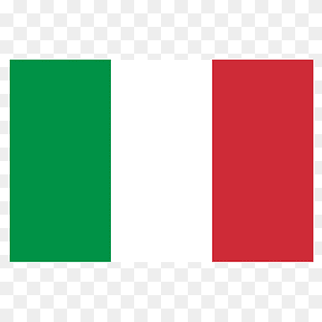

-
Suíça
A Suíça é conhecida por suas paisagens alpinas deslumbrantes e lagos cristalinos.
-
Nova Zelândia
Com suas montanhas majestosas e praias deslumbrantes, a Nova Zelândia é um paraíso para os amantes da natureza.
-
Canadá
O Canadá oferece uma vasta gama de belezas naturais, desde as Rockies até as regiões costeiras.
-
Islândia
A Islândia é famosa por suas paisagens vulcânicas únicas, geysers e auroras boreais.
-
Itália
A Itália combina história rica com paisagens deslumbrantes, de suas colinas na Toscana até as costas da Amalfi.
 -
Japão
Do Monte Fuji aos templos antigos e jardins zen, o Japão tem uma beleza única e diversificada.
-
Grécia
A Grécia é famosa por suas ilhas paradisíacas e arquitetura histórica impressionante.
-
Austrália
A Austrália possui uma beleza natural variada, desde a Grande Barreira de Corais até suas praias e desertos.
-
Noruega
Os fiordes impressionantes e as auroras boreais fazem da Noruega um destino de beleza ímpar.
-
Portugal
Portugal combina belas praias, cidades históricas e uma costa deslumbrante ao longo do Atlântico.